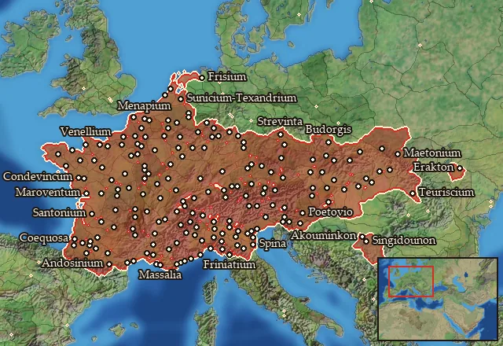

RTR: Imperium Surrectum
RTR: Imperium SurrectumCeltic
← all mercenary pools · wiki index
Mercenary pool: 6 units for hire in 187 regions.

Mercenaries
| Unit | Cost (dn) | Experience | At start | Most in pool | Added per turn | Who can hire | |
|---|---|---|---|---|---|---|---|
| Mercenary Spear Warband | 2,923 | 0 | 2 | 2 | 0.5647–1.1293 | Any faction | |
| Mercenary Sword Warband | 2,588 | 0 | 2 | 2 | 0.6378–1.2755 | Any faction | |
| Mercenary Celtic Spearmen | 3,281 | 0 | 1 | 2 | 0.503–1.0061 | Any faction | |
| Mercenary Celtic Swordsmen | 3,394 | 0 | 1 | 2 | 0.4863–0.9726 | Any faction | |
| Mercenary Celtic Light Cavalry | 3,997 | 1 | 1 | 2 | 0.4129–0.8259 | Any faction | |
| Mercenary Celtic Cavalry | 4,032 | 2 | 1 | 2 | 0.4094–0.8187 | Any faction |
Regions (187)
Aeduia · Aeduia Occidentalis · Alaunia-Genaunia · Allobrogia · Ambarria · Ambiana · Ambidravia-Ambilicia · Ambilatria-Andecavia · Ambisontia · Ambronia · Anagnutia · Anartia · Anartia Orientalis · Anartia Septentrionalis · Anartophractia · Andosinia-Aerenosia · Apuania · Arecomicia · Arvernia · Arvernia Septentrionalis · Athesia · Atrebatia · Auscia-Gatia · Avaticia · Bellovacia · Betasia · Bigerrionia-Bargusia · Biturigia · Biturigia Meridionalis · Biturigia Occidentalis · Boia · Boia Occidentalis · Boihaemum · Boihaemum Meridionale · Boihaemum Occidentale · Boihaemum Orientale · Boreia Skordiskia · Brannovicia · Breunia · Brigantia-Alpes · Britolagia · Cadurcia · Caeracatia-Triboccia · Caerosia-Paemania · Caletia · Camunnia-Venostia · Carnia · Carnutia · Catalia · Catenatia · Caturigia-Bodionticia · Cavaria · Cenomania · Cenomania Meridionalis · Cenomania-Eburovicia · Ceutronia · Ceutronia-Levacia · Cocosatia-Vocatia · Condrusia-Segnia · Coriosolitia · Cosuanetia · Cotinia · Cugernia Vetus · Deciatia · Diablintia · Eburonia · Eburonia Orientalis · Elisycia · Elusatia · Eraviscia · Eraviscia Occidentalis · Eraviscia Orientalis · Eraviscia Septentrionalis · Estionia · Esuvia · Friniatia · Frisia · Gabalia-Rutenia · Geidumnia · Genuatia-Tigullia · Hellenike Arekomikia · Hellenike Dekiataia · Helvetia Vetus · Hercuniatia · Hercynia · Ilvatia · Ingaunia · Insubria · Insubria Meridionalis · Intimilia-Epanteria · Isarcia-Brixenetia · Latobicia · Lemannus Inferior · Lemovicia · Lepontia · Leucia · Lexovia · Licatia-Focunatia · Lingonia · Lingonia Cisalpina · Mandubia-Blannovia · Maricia-Laevia · Marsignia · Mediomatricia · Meldia · Menapia · Menapia Orientalis · Morinia · Namnetia · Nantuatia · Nemetia Vetus · Nervia · Nitiobrogia · Noricum · Noricum Occidentale · Noricum Septentrionale · Orobia · Osia · Osismia · Oxybia · Parisia · Petrocoria · Pictonia · Pleumoxia-Grudia · Racataea-Racatriaea · Rauracia-Latobrigia · Redonia · Remia · Rucinatia · Saevatia-Laiancia · Salassia · Salassia Meridionalis · Salluvia · Santonia · Sedunia-Uberia · Segobrigia · Segusiavia-Ambivaretia · Segusinia · Senonia · Senonia Orientalis · Senonia Septentrionalis · Septem Maria · Sequania · Sequania Meridionalis · Sequania Orientalis · Skordiskia · Sotiatia · Statiellia-Vagiennia · Sturia-Marsacia · Suessionia · Sunicia-Texandria · Tarbellia-Ptiania · Tarusatia-Sibusatia · Taurinia · Tauriscia · Tauriscia Centralis · Tauriscia Meridionalis · Tauriscia Occidentalis · Tauriscia Orientalis · Tectosagia · Tencteria Vetus · Teuriohaemum · Teuriscia · Teuriscia Occidentalis · Tigurinia-Tougenia · Treveria · Treveria Orientalis · Tricastinia-Helvia · Tulingia-Verbigenia · Turonia · Ubia Vetus · Usipetia Vetus · Vangionia Vetus · Veliocassia · Vellavia-Eleutetia · Venellia · Venetia · Venetia Occidentalis · Venetia Orientalis · Venetia-Aremorica · Vennonia-Caluconia · Veragria · Viromandua · Vocontia · Volcaea · Volcaea Orientalis · Volcaea Septentrionalis